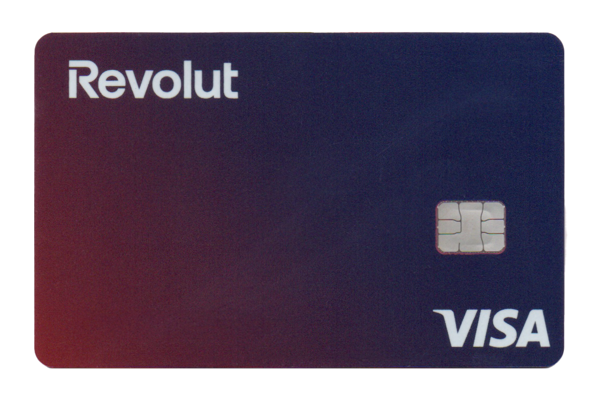

Guida semplice per registrarsi e completare tutti i passaggi richiesti.

 Apri Revolut
Apri Revolut
Revolut è un conto digitale con carta di pagamento che può essere gestito completamente tramite smartphone. A differenza dei conti bancari tradizionali, Revolut è stato progettato come servizio fintech pensato per semplificare pagamenti e gestione delle spese quotidiane.
Una volta aperto il conto è possibile utilizzare una carta virtuale immediata per pagamenti online, richiedere una carta fisica e controllare tutte le operazioni direttamente dall'applicazione.
Revolut è diventato uno dei conti digitali più diffusi in Europa grazie alla semplicità con cui permette di gestire pagamenti, trasferimenti e spese quotidiane direttamente da smartphone.
Carta virtuale immediata
Pagamenti all'estero
App intuitiva
Notifiche in tempo reale
I pagamenti richiesti dalla promozione sono semplicemente normali acquisti effettuati con la carta Revolut.
Molte persone utilizzano la carta Revolut per spese quotidiane come:
Il conto Revolut è gratuito?
Revolut offre diversi piani tra cui un piano base gratuito.
Serve la carta fisica?
Nella maggior parte dei casi è necessario ordinarla per completare la promozione.
I pagamenti devono essere reali?
Sì, devono essere normali acquisti effettuati con carta Revolut.